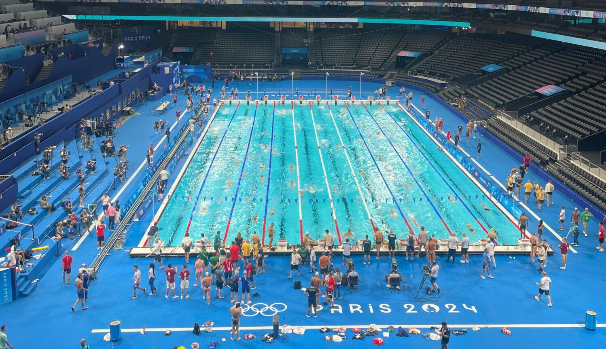
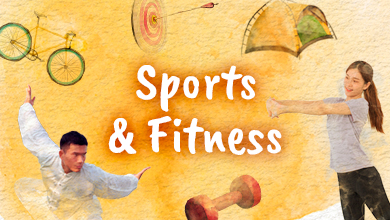
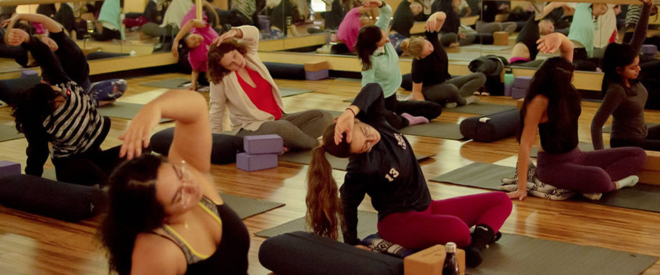

A while back it seemed that cyclists were allergic to gyms and only used them during the pre-season to
lift some weights and do strength training. Then, they would forget about the gym for the rest of the
year, not using it even for spinning, a fitness activity so similar to cycling
.
Luckily, this has changed and several studies have shown that going to the gym regularly to do strength
training or other activities such as Yoga, Pilates or Body Pump, is good for our overall fitness, helps
avoid injuries, corrects muscle imbalances, breaks the routine and improves our social life.
So what can a cyclist do at the gym? The answer is: everything. From lifting weights to Zumba, HIIT
workout, functional training such as CrossFit, etc. Pretty much every activity at the gym can help you
in one way or another to improve your cycling performance. Let’s take a look at the benefits of some of
Spinning
Spinning or indoor cycling classes are available at almost all gyms in the world and are one of
the most popular activities. These group classes are accompanied by motivating music and usually last
about 45 minutes. It’s a high-intensity exercise with frequent changes of pace, making it a great
interval workout for cyclists.
If you’ve never tried a spinning class don’t wait any longer. They are fun, the group atmosphere is
great and the instructor gives you that extra motivation to push yourself and to let out every last
drop of sweat. You should hydrate well, bring a towel, your bib shorts and a comfortable fitness
T-shirt that is highly breathable and wicks away the sweat.Body Pump

SWIMMING
A swimming pool is not just a luxury—it’s a lifestyle. Whether you're looking to cool off during summer,
engage in fitness activities, or simply relax, a well-maintained swimming pool offers the perfect escape.
Our swimming pool is designed with modern safety features, clean water filtration systems, and
professional lifeguards on duty—ensuring an enjoyable experience for all age groups.
Swimming is a very useful and enjoyable activity. It helps keep our body fit and healthy. It is also
an important life skill that can save lives in emergencies. Swimming builds strength, improves breathing,
and reduces stress. People of all ages can enjoy swimming as a sport or a hobby.
Swimming is one of the best forms of exercise. It works on almost every muscle in the body. Regular
swimming improves heart health and increases stamina. It also helps people relax and feel refreshed.Many
people enjoy swimming in pools, rivers.Swimming is a good exercise for the whole body. It keeps us
healthy and strong. It also helps us stay active and fresh. Swimming is fun and useful too. Everyone
should try to learn swimming

🏋️♂️ SPORT AND FITNESS
Sports bring positive change in a person’s life. They promote teamwork, discipline, and the spirit of
hard work. Playing games is not just a source of fun but also a key to good health. People of all ages
can benefit physically and mentally by engaging in sports.It helps build strength and improves
focus and thinking abilities
Fitness is a fundamental part of a healthy lifestyle. It not only strengthens the body but also
has a positive effect on mental health. Daily exercise helps a person feel more energetic,
balanced,and confident
GROUP FITNESS: BUILDING STRENGTH TOGETHER

Group fitness is a fun and motivating way to stay active and healthy. Instead of exercising alone,
people join a group led by a professional instructor. These classes include a variety of workouts
such as aerobics, dance, yoga, cycling, and strength training. Group fitness encourages consistency
and brings energy through shared goals and
One of the biggest advantages of group fitness is the supportive environment. Everyone in the class
works at their own pace, but the shared atmosphere helps push individuals to do their best.
Instructors provide guidance and correct techniques, reducing the risk of injury. This makes
it ideal for beginners and experienced fitness lovers
Additionally, group workouts improve both physical and mental health. They help burn calories, build
muscle, improve flexibility, and increase stamina. At the same time, the social interaction helps
reduce stress, boost confidence, and create a sense of community. Group fitness turns a workout
into a fun and rewarding experience.
JOIN OUR MEMBERSHIP PROGRAM
Unlock your full potential with our exclusive membership plans. Whether you're a beginner or a fitness
enthusiast, we offer flexible options to suit your needs. Get access to state-of-the-art equipment,
professional trainers, group classes, and personalized workout
Why Become a Member?
As a member, you’ll enjoy special discounts, priority bookings, and regular health assessments. Our
supportive community and expert guidance ensure that you stay motivated and reach your fitness goals
faster.Easy to Join – Start Today!
Signing up is simple and affordable. Choose a plan that fits your lifesty leand start your fitness
journey with us today. Your health is your greatest asset — invest in it with our membership!
DISCOVER TRUE BEAUTY AND RELAXATTION AT OUR SALOON & SPA
Step into a world of elegance and calm where beauty meets wellness. Our saloon offers a full range
of professional hair and beauty services including haircuts, styling, coloring, makeup, and bridal
packages. Our expert stylists use top-quality products to ensure your hair looks and feels its best.
We believe that self-care is not a luxury but a necessity, which is why we create a personalized
experience for each of our clients. Whether you want a fresh new look or a simple touch-up, our
team is here to make you
REVITALIZE YOUR BODY AND MIND IN OUR SPA
Our spa is a peaceful sanctuary designed to relax your mind and rejuvenate your body.
From soothing body massages to refreshing facials, manicures, pedicures, and skin treatments, we
offer everything you need to feel renewed. Using natural oils and therapeutic techniques, our trained
therapists ensure every session leaves you relaxed and glowing. Clean, hygienic, and welcoming—our spa
is the perfect escape from daily stress. Visit us to discover the ultimate blend of beauty and tranquility
in one destination.